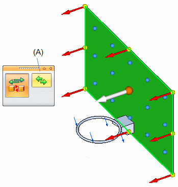
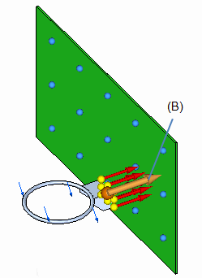

Change connector region direction
Use the Edit Region Directions command to review and modify the assembly connector region direction.
In a correctly defined assembly connector, the faces and surfaces in the target region and the faces and surfaces in the source region should point towards each other.
-
In the Simulation tree-view pane, right-click a connector and choose Edit Region Directions.
The graphics window shows the faces and surfaces constituting the target region and their individual direction indicators.
-
Modify the direction of the connector region on the target faces and surfaces by doing one of the following:
-
To flip the connector direction by 180 degrees for all of the faces and surfaces, click the Flip All Directions button on command bar (A) or press F on the keyboard.

-
To change the direction of individual faces and surfaces, click the direction handle (B) on that face or surface.

-
-
Press Enter or right-click to continue to the source region step.
-
Repeat to modify the direction of the connection on the source faces and surfaces of the connector.
Tip:-
To leave a region direction unchanged, press Enter or right-click to skip the step and continue.
-
You can use the Edit Region Connectors command to modify glue and no penetration connectors created automatically or manually.
-
How do I
Create connectors based on assembly relationshipsCreate assembly connectors using the Auto command
Create manual connections between faces or surfaces
Replace target and source connection regions
Learn more
Assembly connectorsTarget and source connector regions
Assembly connector handles, labels, and symbols
Glue and no penetration contact connectors
Thermal connectors
Look up more details
Auto command barAssembly Connector command bar
Assembly Connector Properties dialog box